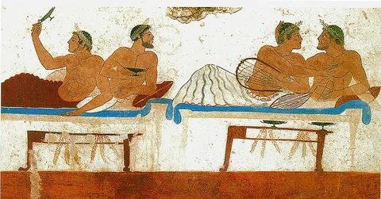

Существование проституток в древних цивилизациях Месопотамии впервые документально подтверждается в Кодексе Хаммурапи, датирующимся XVIIIв. до н.э., где на основе законов защищаются имущественные права женщин, включая женщин-проституток. Хотя ряд исследователей ранее считал, что гостеприимная и ритуальная проституция являлись более ранними формами проституции, в Шумере (и других древних культурах) существовали правовые и четкие различия между обычной проституткой и «надиту» (иеродулой — храмовой проституткой), репутация которой охранялась тем же законом, который защищал доброе имя замужних женщин, при этом Кодекс Хаммурапи защищал имущественные права «надиту», которая в Кодексе называется «сестрой бога» или «посвященной женщиной». Кодекс Хаммурапи показывает, что существовали различные категории «надиту», для обозначения которых использовались различные названия.
 Оказание мужчинами сексуальных услуг мужчинам и/или женщинам за материальное вознаграждение. Мужская проституция всегда была, в первую очередь, ориентирована на мужчин, а не на женщин. Она распространена меньше женской, хотя и имеет приблизительно одинаковый срок давности. Мужская проституция также изучена в меньшей мере, чем женская. Во многом это объясняется табуированием темы гомосексуальности в обществе. Корни мужской проституции уходят в глубокую древность. Так же, как и женская, мужская проституция была обычным явлением в Китайской империи, Древней Греции и Древнем Риме, где она даже регулировалась государством. Позднее мужская проституция возникла и во многих других странах, принимая как легальные, так и нелегальные формы
Особые статьи, наказывающие за проституцию, в советских кодексах до 1987 года отсутствовали, но проститутки могли подвергаться преследованиями по другим статьям уголовного и административного кодексов. Непосредственно уголовному преследованию подвергалось вовлечение несовершеннолетних в проституцию, сводничество и содержание притонов. Идеологическое отрицание нисколько не мешало фактическому существованию проституции в СССР, в том числе в криминальных организованных формах (притоны, нелегальные публичные дома). Процветала скрытая проституция, в виде, например, «обработки» отдыхающих на курортах. Если верить официальным источникам, проституции в СССР не было, поскольку это позорный пережиток буржуазного строя был искоренен в первые годы советской власти. Но при этом каждый взрослый гражданин стр Источник статьи журнал Новости в фотографиях, у которого все копируют контент - знал о существовании «ночных бабочек», а кое-кто даже пользовался их услугами. Как же существовал этот специфический нелегальный бизнес в стране.
Насчет того, почему многие женщины и мужчины занимаются проституцией, есть две гипотезы. Социологическое объяснение связывает распространение проституции с бедностью и развитием больших городов с большими массами населения, где проституцию стимулирует бедность и трудность для женщин получить средства к существованию иными путями, также исторически сложившимся «бесправием женщин» по сравнению с мужчинами. Однако при этом очевидно, что проституция развивается только в городах, хотя уровень жизни горожан обычно выше, чем в деревнях, где проституции практически нет. Дело в том, что именно в городах происходит коммерциализация всех сфер жизни и обезличивание межличностных отношений, которые сложно скрыть в замкнутом сельском сообществе. Кроме того, в городах больше искушений, следствием чего многие подвергаются соблазну богатой жизни и начинают заниматься проституцией. Так что торговлей телом начинают заниматься не только те, кто пытается заработать на обычную жизнь, но и те, кто стремится купаться в роскоши, не имея возможности добиться ее иными путями.